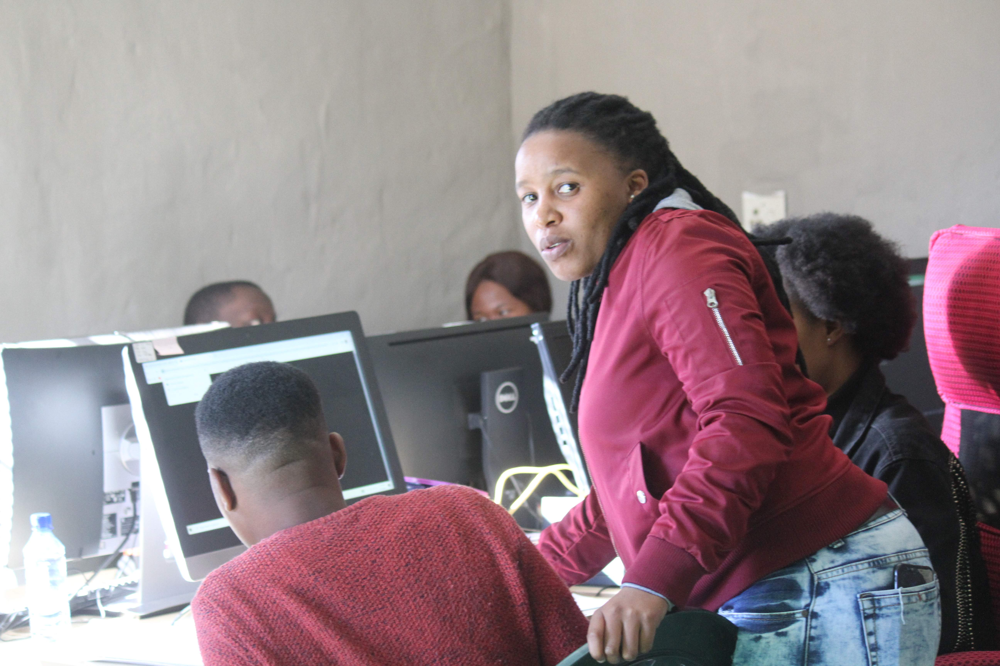
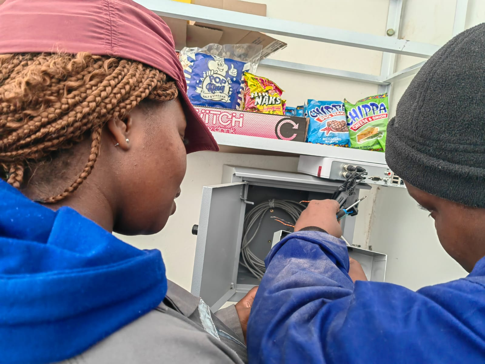
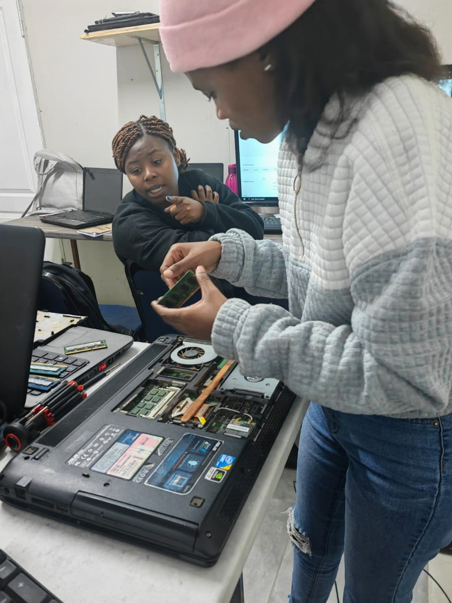

Internships
An internship is a work experience offered by an organization for a limited period of time where an intern performs entry-level work.
An internship is a work experience offered by an organization for a limited period of time where an intern performs entry-level work.



Follow us on Facebook and LinkedIn to learn more about available internships
University and FET College graduates are given an opportunity to enhance their academic qualifications through structured workplace exposure and specialised training. Unemployed graduates are offered the needed experience that will prepare them for work for the stipulated duration of the internship


Graduates and TVET college learners that have qualification(s) from accredited and recognised tertiary institutions in the following fields to participate in the internship programme.


© copyright 2021 cumlaudeinstitute reserved